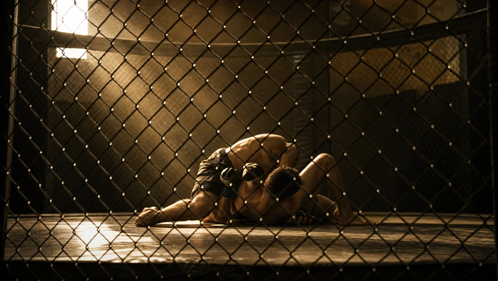

Frag zehn Leute auf der Straße, was Glory ist, und neun werden antworten: „Etwas mit UFC?". Das ist verständlich. Beide sind große Promotions im Kampfsport, beide haben einen Ring oder einen Käfig, beide zeigen Kämpfer in Shorts. Doch wer einmal zehn Minuten lang in eine Glory-Show reinschaut und dann zehn Minuten UFC, sieht sofort: das sind zwei verschiedene Welten.
Glory ist die größte Stand-up-Promotion der Welt. UFC ist die größte Mixed-Martial-Arts-Promotion. Der Unterschied ist nicht klein. Er entscheidet, welche Werkzeuge ein Kämpfer braucht, wie sich das Training anfühlt, und — wenn du selbst anfangen willst — in welche Richtung du dich bewegst.
Hier ist, was wir aus 20 Jahren ExitAsia gelernt haben — und was Marlon, der mit beiden Welten Kontakt hatte, dazu sagt.
Was unterscheidet Glory und UFC eigentlich?
Glory wurde 2012 in den Niederlanden gegründet, mit der Idee, das beste Kickboxen der Welt unter einem Dach zu versammeln. Das Format ist klar: drei Runden à drei Minuten, alles im Stand. Ellbogen sind nicht erlaubt (anders als Muay Thai), Lowkicks zur Oberschenkelaußenseite ja, Knie zum Körper ja, Knie zum Kopf nein. Clinch ist erlaubt, aber maximal kurz — sobald sich Kämpfer 3 Sekunden festhalten, ohne aktiv zu sein, trennt der Schiedsrichter.
UFC wurde 1993 in den USA gegründet, ursprünglich als „Style-vs-Style"-Experiment: Wer gewinnt, wenn ein Karateka gegen einen Ringer antritt? Heute ist UFC die Premium-Liga für Mixed Martial Arts. Format: drei Runden à fünf Minuten in den meisten Kämpfen, fünf Runden in Title- und Main-Events. Erlaubt ist fast alles: Striking im Stand, Wrestling-Takedowns, Bodenpositionen, Submissions (Würgen, Hebel), Ground-and-Pound (Schläge am Boden). Verboten sind nur wenige Dinge: Augenstechen, Bisse, Schläge auf den Hinterkopf, Knie gegen einen am Boden liegenden Gegner.
Vereinfacht: Glory ist die Welt der Stand-up-Spezialisten. UFC ist die Welt der Allrounder. Ein Glory-Kämpfer kann oft besser kicken als die meisten UFC-Kämpfer. Ein UFC-Kämpfer hat dafür fünf andere Werkzeuge, die der Glory-Kämpfer nicht braucht.

Wie unterscheidet sich das Training konkret?
Wer Glory-Niveau anstrebt, trainiert anders als jemand, der ins UFC will. Die Zeitverteilung verrät alles.
Glory-Kämpfer-Training (typische Woche)
- Padarbeit & Schattenboxen: 8–10 Stunden
- Sparring im Stand: 4–6 Stunden
- Krafttraining & Conditioning: 4–5 Stunden
- Clinch-Drills (kurze Sequenzen): 1–2 Stunden
- Ringerfahrung, Beweglichkeit: optional, niedrige Priorität
UFC-Kämpfer-Training (typische Woche)
- Striking (Boxen, Kickboxen, Muay Thai): 4–5 Stunden
- Wrestling & Takedown-Verteidigung: 4–5 Stunden
- Brazilian Jiu-Jitsu & Submissions: 3–4 Stunden
- Sparring — oft MMA-spezifisch mit Wechsel Stand/Boden: 3–4 Stunden
- Krafttraining & Conditioning: 4–5 Stunden
Sieht man das nebeneinander, wird klar: Der Glory-Kämpfer kann seine Stand-up-Stunden konzentrieren. Der UFC-Kämpfer muss dieselbe Zeit auf drei oder vier Disziplinen verteilen. Beide trainieren ungefähr gleich viel, aber an ganz unterschiedlichen Dingen.
Vergleichstabelle — Glory vs UFC im Überblick
Was die zwei Promotions konkret trennt
| Aspekt | Glory | UFC |
|---|---|---|
| Disziplin | Kickboxing (Stand-up) | Mixed Martial Arts |
| Gegründet | 2012, Niederlande | 1993, USA |
| Bodenkampf | Nein — nie | Ja — oft entscheidend |
| Submissions / Würgen | Nicht erlaubt | Erlaubt — häufige Beendigung |
| Knie zum Kopf | Verboten | Erlaubt (nicht am Boden) |
| Ellbogen | Verboten | Erlaubt im Stand und am Boden |
| Clinch | Max. 3 Sekunden ohne Aktion | Erlaubt, oft Takedown-Setup |
| Lowkicks | Ja, Standardtechnik | Ja, Standardtechnik |
| Runden / Format | 3×3 Min | 3×5 Min (5×5 bei Titles) |
| Arena | Ring (12×12 m) | Octagon (Käfig, 9 m Durchmesser) |
| Markt & Reichweite | Vor allem EU, NL, JP, USA | Global, Pay-per-View-Marktführer |
| Streaming in DE | Glory-eigenes + zeitweise DAZN | DAZN (exklusiv) |
Welche Liga ist härter?
Das ist die Frage, die uns am häufigsten gestellt wird. Die Antwort ist nicht einfach, weil beide auf unterschiedliche Weise hart sind.
Glory ist härter im Treffer-Volumen pro Sekunde. Wenn zwei Top-Glory-Kämpfer in einer dreiminutigen Runde antreten, sind das oft 60–100 Schläge und Tritte. Pro Runde. Es gibt keinen Bodenkampf, in dem sich Kämpfer „ausruhen" könnten. Wer im Glory-Ring steht, tauscht ununterbrochen. Das Risiko für Knockouts pro Minute ist statistisch höher als im UFC.
UFC ist härter im technischen Anspruch. Ein UFC-Kämpfer muss sich plötzlich anpassen können, wenn sein Gegner ihn unerwartet zu Boden bringt. Der Wechsel zwischen Stand-up und Bodenkampf ist mental und körperlich erschöpfend. UFC-Kämpfe dauern oft länger, und Submissions am Boden können mehr Schaden anrichten als jede Schlagserie.
Aus Sicht eines Trainers: Glory ist die Welt der reinen Körperlichkeit. UFC ist die Welt der Komplexität.
Warum ist UFC kommerziell so viel größer?
Eine Frage, die viele überrascht: Glory ist sportlich höchstwertig — warum dominiert UFC den Markt dann so klar?
Drei Gründe, die wir über die Jahre beobachtet haben:
Erstens: UFC begann früher und mit größerem Budget. Seit der Übernahme durch Endeavor (heute TKO Group) im Jahr 2016 hat UFC Milliarden in Marketing investiert. Glory hatte das nie. Vor allem das US-Sportmarketing hat zudem Mixed Martial Arts kulturell stärker normalisiert als reines Stand-up-Kickboxen.
Zweitens: Vielfalt der Spannungsbögen. Ein UFC-Kampf kann durch Knockout, Submission, technische Niederlage, Doctor-Stoppage oder Punktentscheidung enden. Das gibt jedem Kampf eine andere Geschichte. Glory-Kämpfe enden meistens durch K.O., T.K.O. oder Punkte — weniger Geschmacksvariation für das Massenpublikum.
Drittens: Pay-per-View-Architektur. UFC hat ein hochentwickeltes PPV-System mit Stars wie Conor McGregor, Israel Adesanya, Jon Jones — Gesichter, die ein breites Publikum kennt. Glory hat eigene Stars (Rico Verhoeven, Badr Hari historisch), aber sie sind in der breiten Bevölkerung nicht so bekannt.
Das bedeutet nicht, dass Glory schlechter ist. Es bedeutet nur: Glory ist die Liga der Aficionados. UFC ist die Liga der Mainstream-Sport-Konsumenten.
Was bedeutet das für dich, wenn du anfangen willst?
Wenn dich eine der beiden Welten reizt — und du in 5, 10 oder 15 Jahren denkst, dass du selbst mal in einen Ring oder Käfig steigen willst — dann ist die wichtigste Entscheidung am Anfang: welche Disziplin lernst du zuerst?
Wenn dich Glory reizt — lerne Kickboxen oder Muay Thai. Beide enthalten alle Werkzeuge, die du in einem Glory-Kampf brauchst. Kickboxen mit ISKA-Regeln ist sogar fast deckungsgleich. Muay Thai geht weiter (Knie zum Kopf, Ellbogen) — was du dir bei Glory abgewöhnen musst, aber die Basis ist dieselbe. Unser Kickboxen Komplettkurs (€99, 7 ISKA-Gürtelstufen) und unser Muay Thai Komplettkurs (€129, mit Marlon Tröscher) decken beide diese Basis ab.
Wenn dich UFC reizt — lerne erst Stand-up, dann Grappling. Fast jeder UFC-Champion hat mit einer Disziplin angefangen, sie auf hohem Niveau gelernt, und erst dann Wrestling oder BJJ dazugenommen. Conor McGregor war Boxer und Karateka, bevor er Wrestling lernte. Israel Adesanya war Kickboxer auf Glory-Niveau, bevor er ins UFC ging. Die Aussage stimmt: Der schnellste Weg in den UFC ist nicht, sofort MMA zu trainieren, sondern eine Disziplin perfekt zu können. Stand-up — also Kickboxen oder Muay Thai — ist dafür der häufigste Einstieg.
Für beide Wege ist der Anfang derselbe: saubere Schläge, sauberer Stand, sauberer Roundhouse-Kick. Wer das in 12 Monaten auf solides Niveau bringt, hat eine Basis, von der aus alles möglich ist.
Was hat unsere 20-Jahre-Beobachtung gezeigt?
Zwei Dinge, die uns immer wieder überrascht haben:
Erstens: Stand-up ist immer der Filter. Wir haben über die Jahre Dutzende Schüler gesehen, die mit der Idee kamen, MMA zu trainieren. Was sie nicht wussten: ohne sauberes Stand-up scheitert auch der beste Ringer im Octagon, weil er irgendwann wieder aufstehen muss. Wer Stand-up nicht beherrscht, hat ein Loch in seinem Spiel, das gegnerische Stand-up-Spezialisten finden.
Zweitens: Glory ist der härteste Stand-up-Standard der Welt. Wer in Glory aktiv ist — auch nicht als Champion, sondern einfach als Roster-Fighter — gehört im Stand-up zum oberen einen Prozent weltweit. Das ist nichts, was man „nebenbei" erreicht. Aber: jeder Weltklasse-Stand-up-Kampf, den du heute siehst, beginnt mit denselben Bewegungen, die wir in unseren Online-Kursen unterrichten. Der Weg ist lang, aber er beginnt am selben Punkt.
Wenn du Glory oder UFC selbst schauen willst
Für Glory: glorykickboxing.com hat Live-Streams und Replays. Einzelne große Events sind auch über DAZN verfügbar. Glory veranstaltet regelmäßig Shows in Düsseldorf — wer einmal live dabei war, versteht die Atmosphäre anders als über Streaming.
Für UFC: DAZN hat in Deutschland die exklusiven Rechte. Pay-per-View ist nicht nötig — in einem DAZN-Abo sind alle Events enthalten, was es deutlich günstiger macht als in den USA, wo PPVs separat gekauft werden müssen.
Wenn du anfangen willst, selbst zu trainieren — die Tools sind alle online. Du brauchst keinen Hallenvertrag, keine teure Ausrüstung, kein Sparring-Equipment. Du brauchst eine Methode, einen Trainer, und Konstanz. Unser 7-Tage FitStart Kurs (€9) gibt dir die Basis, ohne dass du dich vorher festlegen musst. Wer danach klar weiß, dass es Stand-up sein soll, hat zwei Wege: Kickboxen oder Muay Thai. Beide führen in dieselbe Richtung — auf das Niveau, das du in Glory siehst.